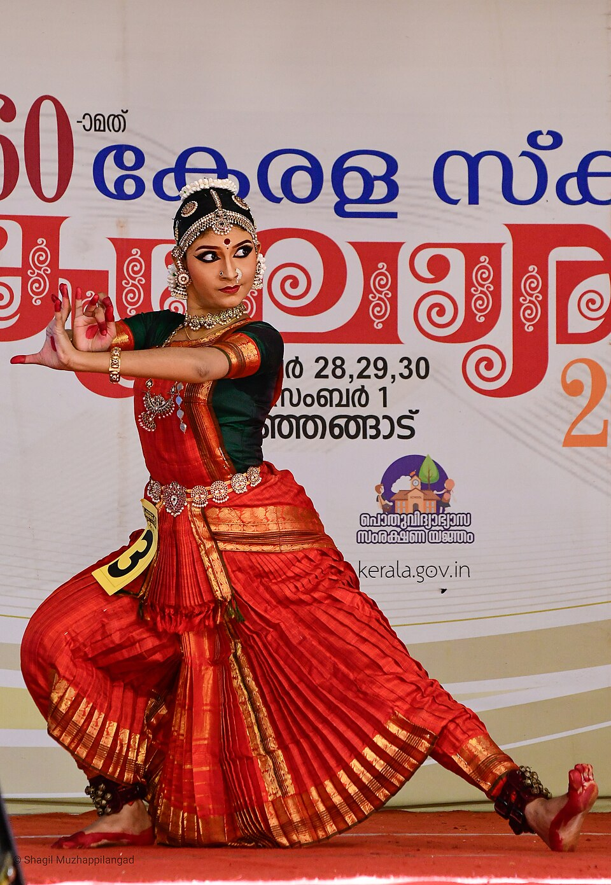
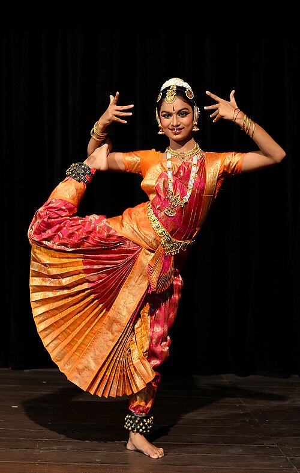

Dance and Traditions
Bharatanatyam is a classical dance form that developed in Tamil Nadu. It has a long association with temple traditions, devotional performances and Indian cultural heritage.
Origins of the Dance

The dance form developed through generations of teachers and performers. It combines structured movements, rhythm and expressive storytelling.
Today, Bharatanatyam is taught in dance schools and performed at cultural festivals and events throughout India and abroad.
Mudras and Gestures
Mudras are symbolic hand gestures used to communicate ideas, objects, actions and emotions. They are an important part of Bharatanatyam storytelling.
Through different combinations of hand movements and facial expressions, dancers can describe characters and events without speaking.
Adavus and Movement
Adavus are the basic steps of Bharatanatyam. They combine hand movements, footwork, body positions and rhythm.
Dancers practise these steps carefully to develop balance, coordination, strength and accuracy. Different adavus are combined to create complete dance sequences.
Abhinaya
Abhinaya refers to the art of expression. Dancers use their eyes, eyebrows, facial expressions and body movements to communicate feelings and stories.
Costume and Jewellery
Traditional Bharatanatyam costumes are colourful and specially designed to support the movements of the dancer. Pleated fabric opens beautifully during certain dance positions.
Jewellery, ankle bells and traditional ornaments complete the appearance of the performer.
A Short Timeline
- Ancient times: The Natya Shastra, attributed to Sage Bharata, describes the principles of Indian dance and drama.
- Temple era: Dancers called devadasis performed sadir in the temples of Tamil Nadu, including Thanjavur and Chidambaram.
- 19th century: The Thanjavur Quartet – the brothers Chinnayya, Ponnayya, Sivanandam and Vadivelu – shaped the performance structure still followed today.
- 1930s: Reformers such as E. Krishna Iyer and Rukmini Devi Arundale revived the art. Rukmini Devi founded Kalakshetra in Chennai in 1936.
- Today: Bharatanatyam is taught and performed worldwide.

The Order of a Recital
A traditional recital, called a margam, usually follows this order, though schools may vary it:
- Alarippu – an opening salutation
- Jatiswaram – pure dance to musical notes
- Shabdam – dance with words
- Varnam – the longest and most demanding piece
- Padam – slow, emotional expression
- Tillana – a lively rhythmic finale
- Mangalam – a closing prayer

Common Mudras
The hands speak as clearly as words. Each gesture can have many meanings, depending on the story being told.
- Pataka (flag): all fingers extended; can show clouds, rivers or a blessing
- Alapadma (lotus): fingers spread and curved like an open flower
- Hamsasya (swan’s beak): thumb and forefinger touch; used for delicate actions
- Anjali (salutation): both palms together

The Costume at a Glance
- Silk costume with a pleated fan that opens in the half-sitting position
- Temple jewellery: head ornament, earrings, necklaces, armlets and waist belt
- Salangai: ankle bells that sound every footstep
- Jasmine flowers in the hair, with red dye on the hands and feet
Great Names of Bharatanatyam
- Rukmini Devi Arundale: founder of Kalakshetra and a leader of the revival
- T. Balasaraswati: celebrated exponent of the temple style of dance
- Padma Subrahmanyam: dancer, teacher and researcher of the art
Where to Experience It
The Brihadisvara Temple in Thanjavur and the Nataraja Temple in Chidambaram, where Shiva is worshipped as the Lord of Dance, are closely linked to the tradition. Every December and January, Chennai’s Margazhi season fills halls with dance and music.